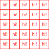
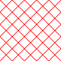
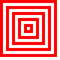

Patches
- For many years we've challenged students to draw patches using Python.
- We've recreated ten of the twenty patches here using SVG.
- Click on a patch to load it in a separate window.
- Try to work out how each patch is created, then view the source to see if we did it that way.
- We've left 'the other ten' patches as a challenge for you to undertake in your self-directed study time.


